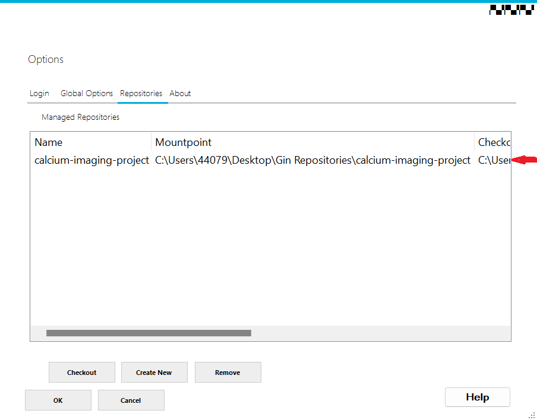
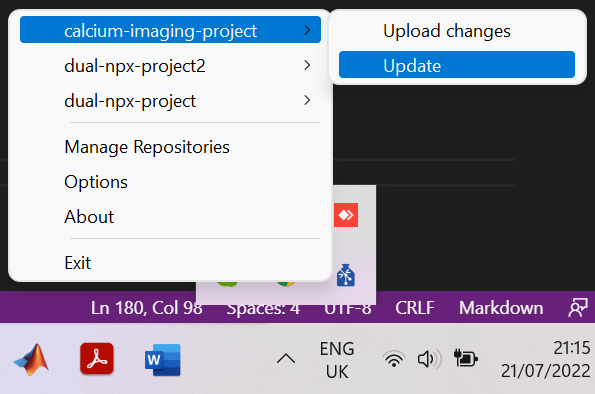

Repository Management with WinGIN
Contents
Repository Management with WinGIN#
This is the documentation on how to use WinGIN which is the graphical user interface for managing files on a GIN server for Windows operating system users. You can use it to manage files on Bristol GIN and on the public GIN server. It is a frontend to the GIN Client. For installation instructions refer to WinGIN Installation.
Login to your Account#
In order to login to GIN, you have to have a registered account on the local GIN server or on the public GIN server. Instructions on how to do it are available here. You login by launching the GinClientApp and entering your account credentials.
{kind=link}
Figure 1. Login to your Account
When loging in for the first time, Gin Server Alias has only a single option pointing to the public GIN server. You can add another GIN server later.
Set Global Options#
Once you are logged into your GIN account, you can view global options by clicking on the Global Options pane.
{kind=link}
Figure 2. Global Options
Global options allows you to set the frequency of checking for repository updates. You can chose between 5, 15 (default), 30, and 60 minutes or disable repository update checkup by choosing the ‘never’ option.
Warning
If you choose any of the update options other than ‘never’, your local repositories will be updated automatically every now and then if WinGIN is running in the background. This may potentially be unwanted. It is, therefore, safer to disable automatic update checkup.
You also have an option to set your checkout directory. The checkout directory is where the downloaded repository files are kept. You are not supposed to edit files in this location. It is advised to keep the default C:\Users\<username>\AppData\Roaming\g-node\GinWindowsClient\Repositories location as a checkout directory, unless you are in risk of running out of space on the C: drive. The checkout directory should not be easily accessible.
The mountpoint directory is your repository working space. This is the location where you work with your repository files: Add them, remove, or edit. Any changes you make in the mountpoint directory will be reflected in the checkout directory. Contrary to the checkout directory, the mountpoint directory should be easily accessible.
Turning on Download all Annex’ed Data will download all files upon checkout from the repository. If this option is turned off, only the repository folder structure containing file pointers will be downloaded.
Clicking Help will open the GIN repository page containing all GIN info files.
Bring up the Main Window#
You can close the WinGIN window at any time without closing the app. WinGIN will still be running in the background and can be located in the taskbar. You can relaunch the main window by double-clicking the blue GIN icon or right-clicking the icon and chosing one of the three window panes to open. You can close the WinGIN app by right-clicking the icon in the taskbar and chosing the Exit option.
{kind=link}
Figure 3. Locating WinGIN in the Taskbar
Configure a GIN Server#
You can add a new server by opening the Login pane in the main window and clicking the Add Server button located on the right side of the window.
{kind=link}
Figure 4. Add a New Server
You should be able to see the Add Gin Server window. In order to add the Bristol GIN server specify Server Alias as bristol-gin. In the web part of configuration set the protocol to https. Hostname should be set to https://www.bristol.ac.uk/bristolgin, while for the port type in 2121. In the Git part of configuration the user name should be set to git. Hostname should be set to git@bristol.ac.uk/bristolgin bristol-gin, while port should be chosen as 22. Once you enter all required configuration information, press the Save button to add a new server.
{kind=link}
Figure 5. Configure a Server
Show Configured Servers#
If you want to see the list of servers that your GinClientApp is configured to work with, press the dropdown arrow to the right of the current server in the Login pane
{kind=link}
Figure 6. Show Configured Servers
Change the Default Server#
If you want to change the default server that your GinClientApp works with, press the Set Default button in the Login pane
{kind=link}
Figure 7. Set your Default Server
Create a Bare Repository#
In order to create an empty repository, open the repositories pane in the main WinGIN window and click the Create New button located at the bottom of the window.
{kind=link}
Figure 8. Request to Create a New Repository
You should then be prompted to enter the new repository details as below.
{kind=link}
Figure 9. Enter Repository Details
After clicking OK button the new repository should appear in your repositories workspace as indicated by an arrow below.
{kind=link}
Figure 10. New Repository
The new repository should appear on the GIN server, as well as a new folder should be created in your checkout and mountpoint directories.
Delete a Local Repository#
In order to delete the local instance of a repository, go to the Repositories pane in the main WinGIN window and click the Remove button located at the bottom of the window.
{kind=link}
Figure 11. Delete a Repository
Update a Remote Repository (Upload Files)#
In order to update the remote repository with changes that were made in the local repository or to upload files to a remote repository, go to the Windows taskbar, right-click on the blue GIN icon, choose the repository you want to upload files to, and click on the Upload changes option.
{kind=link}
Figure 12. Update a Remote Repository
You should then see the Files to upload window showing all files to be updated/uploaded to the repository. Write down a succinct commit message at the bottom of the window. If it is an initial commit, it would suffice to say so. Once you click OK, the remote repository should be synchronised with the local one.
{kind=link}
Figure 13. Commit Changes to a Remote Repository
Alternatively, you can right-click a file, go to the Gin Repository option and click on Upload file like it is shown below.
{kind=link}
Figure 14. Upload a File to a Remote Repository
Remove the Content of Local Files#
If your remote and local repositories are synchronised, you may want to remove the local content to free storage space. In order to do so, right-click the file of interest, then go to Gin Repository option and further choose the Remove local content option.
{kind=link}
Figure 15. Remove Local Content
Download (Clone) a Remote Repository#
In order to download a copy (clone) of a full remote repository onto your local machine, go to the Repositories pane in the main WinGIN window and click the Checkout button in the bottom left corner of the window.
{kind=link}
Figure 16. Request to Download a Repository
Then specify details of an existing remote repository as in the example below.
{kind=link}
Figure 17. Specify Details of a Repository to Download
The requested repository is then downloaded to your checkout directory and also should appear among your managed repositories as indicated by an arrow in the image below.

Figure 18. Remote Repository Successfully Downloaded
Note
Repository checkout does not download full files but only file pointers, unless you turned on the Download all Annex’ed Data option in the Global Options pane. To get full files, double click the file of interest.
Update a Local Repository with Remote Changes#
In order to update the local repository, go to the Windows taskbar, right-click the blue GIN icon, go to the repository of interest and select the Update option.
{kind=link}
Figure 19. Update your Local Repository
You should be notified that your repository is up to date after updating completes.
Note
Repository updating does not download full files but only file pointers, unless you turned on the Download all Annex’ed Data option in the Global Options pane. To get full files, double click the file of interest.
Update Local Files with Remote Content#
If you want to update a specific file with remote content or if you want to restore the content to a local file with removed content, double-click the file of interest. Alternatively, you can right-click the file of interest, then select the Gin Repository option and further choose the Download File option.
{kind=link}
Figure 20. Download File Content
Roll back a File to an Earlier Version#
In order to restore a file to an earlier version, right-click the file of interest, go to the Gin Repository option and further choose Get older version option.
{kind=link}
Figure 21. Roll back a File to its Previous Version
This should open the Select previous version window. Choose the version you would like to go back to and press the Restore button.
{kind=link}
Figure 22. Select the Version you Want to Roll Back to
The older file is restored in the same folder as the new one, but with the date in the file name: “file name”-“date”
Warning
If there is another file with the same name in the form “file name”-“date” in the same folder, the file will be overwritten.